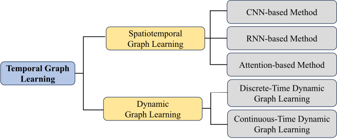
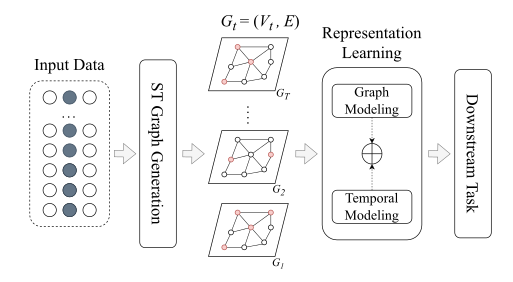

Temporal Graph Learning
Temporal Graph Learning
The primary graph learning techniques focus on static graphs where the structure and node features remain constant over time. General graph learning methods, such as matrix factorization [127], are often used for node embedding and link prediction, but traditional matrix factorization techniques may struggle with evolving graph structures. It is also similar to random walk-based methods such as DeepWalk [42] and Node2Vec [43], which capture global and local connectivity within static graphs. GNNs, such as GAT [35] and GCN [163], were also initially proposed to model static graphs. These approaches have demonstrated significant success in many real-world downstream tasks, such as node classification, link prediction, and community detection, by effectively mining information from static graphs.
Despite their effectiveness, typical graph learning methods face challenges when applied to dynamic or evolving graphs. Static models assume that the graph structure and node features do not change over time, which is often unrealistic in real-world scenarios where graph structures continuously evolve [164, 165, 67, 166]. Such phenomena are common across many domains, prompting researchers to propose a variety of datasets and benchmarks for further investigation.
Temporal graph learning aims to capture dynamic interactions and evolving features in graphs, which are important for many real-world tasks, such as real-time recommendation systems [167], human mobility [10, 11], epidemic modeling [168], anomaly detection [169, 56, 170], and others [1]. By adapting to the temporal aspects of graph structures, graph learning models can perform more accurate predictions and provide more robust solutions for broader tasks.
In this survey, as shown in Figure 3.1, we review current approaches that address both the evolution of graph structure and the changes in node or edge features over time. These approaches are categorized into dynamic graph learning and spatiotemporal graph learning. Dynamic graph learning focuses on modeling structural changes, such as node or edge additions and deletions. Dynamic graph learning is further divided into two main tasks: discrete-time dynamic graph learning, which models structural changes at discrete time intervals, and continuous-time dynamic graph learning. In contrast, spatiotemporal graph learning incorporates temporal modeling techniques to capture both the spatial relationships within the graph structure and the temporal dynamics of feature changes in nodes or edges. We examine three core strategies that enhance temporal graph learning: convolutional neural networks (CNN-based methods), recurrent neural networks (RNN-based methods), and attention-based methods. This survey provides a detailed review of representative state-of-the-art techniques for temporal graph learning models.

Dynamic Graph Learning
Dynamic graph learning aims to model the evolving graph structure over time [164, 165, 170]. Unlike static graphs, where the structure remains unchanged, dynamic graph learning captures changes in graph structure, such as node addition or removal, edge addition or removal, and changes in feature attributes associated with nodes or edges. Handling dynamic and evolving graph structures is important because it enables the detection of patterns and responses to real-time events in evolving graphs, which static models cannot capture. Dynamic graph learning often focuses on tasks like node classification and link prediction, driven by the availability of relevant datasets [165].
In this section, we categorize dynamic graph learning techniques into two groups: discrete-time and continuous-time dynamic graph learning focusing on discrete dynamic graph (DDG) types and continuous dynamic graph (CDG) types, respectively.
Discrete-Time Dynamic Graph Learning
Discrete dynamic graph (DDG) types. This type of graph represents a dynamic graph as a sequence of snapshots, which capture the state of the graph at specific time intervals [171, 172, 173]. In a discrete dynamic graph setting, the graph at time \(t\) is represented as \(G_{t} = (V_{t}, E_{t})\), where \(V_{t}\) is the set of nodes and \(E_{t}\) represents the set of edges at time \(t\). Formally, DDG is represented as:
GNNs-based strategy. Unlike static models of GNNs such as GCN [163] and GAT [35], several GNNs are proposed to model discrete dynamic graphs. Several representative techniques, such as EvolveGCN by [174], address dynamic graphs by evolving the parameters of GCNs over time using recurrent neural networks, focusing on updating GCN weights to capture the graph’s evolution. DySAT [175] introduces a model that employs self-attention mechanisms along both structural and temporal dimensions to learn node representations, effectively capturing local structural properties and temporal changes in dynamic graphs. ROLAND [176] extends static GNNs to dynamic settings through a hierarchical node state update mechanism to enable a live-update evaluation to mimic real-world use cases. [177] introduced SEIGN, which proposes a scalable evolving inception GNN for large dynamic graphs, utilizing a parameter-free message-passing mechanism and evolving graph filters to reduce memory usage and capture changing dynamics efficiently. WinGNN [172] eliminates the need for temporal encoders by employing a random gradient aggregation window, capturing long-term temporal dependencies efficiently without additional encoders. TCGC [171] introduces a framework for dynamic recommendation systems that incorporates a temporal collaboration-aware indicator and a co-evolving graph network, enhancing the model’s ability to capture both short-term event dynamics and long-term historical influences on user preferences.
Non-GNNs-based strategy. Discrete-Time Dynamic Graph Learning can also be processed using general deep learning or classical machine learning. The first example of a representative technique is NetWalk by [178], which employs a deep autoencoder with reservoir sampling to learn dynamic embeddings efficiently. They focus on anomaly detection tasks while maintaining memory efficiency in evolving networks. DynamicTriad introduced by [179], models the triadic closure process to capture both structural and temporal evolutions by considering how to open triads (two nodes connected to a common third node) close over time. NAT (Neighborhood-Aware Temporal network) [173] uses dictionary-type neighborhood representations and an N-cache structure to efficiently update embeddings based on joint neighborhood information, enabling scalable and accurate modeling of large-scale DDGs. Dyngraph2vec [180] combines dense and recurrent layers to learn individual graph snapshots and the transition between them. This technique has three variations: autoencoder, recurrent, and a combination of autoencoder and recurrent.
Continuous-Time Dynamic Graph Learning
Continuous dynamic graph (CDG) types. This type of graph captures continuous changes in the graph over time, which can be denoted as \(\mathcal{G} = (G, S)\), where the initial graph \(G\) at time \(t=0\) might be empty or have some initial structure. The initial graph \(G\) at time \(t=0\) does not include any past events. The changes in the graph are captured by a set of events \(S = {S_1, S_2, \dots, S_T}\). Similar to DDG, static graph learning models can be adapted to model CDG. However, they fail to capture the sequence of events and consequently lose important temporal information. Additionally, static methods must be rerun from scratch to learn the new graph structure whenever a change occurs.
GNN-based strategy. To effectively model CDG, several GNN models have been developed, each introducing unique mechanisms to capture temporal dynamics in the graph. JODIE [181] models user-item interactions using coupled RNNs that learn the trajectory of dynamic embeddings. It employs a projection operator to predict future interactions within the CDG setting, effectively capturing short-term and long-term user behaviors. Building upon attention mechanisms, [182] propose the Temporal Graph Attention Network (TGAT), which uses a temporal graph attention mechanism with functional time encoding to generate node embeddings, handling unseen nodes and future interactions without the re-training process. TGN (Temporal Graph Networks) [183] focuses on maintaining nodes’ memory states to capture long-term dependencies, using message passing and temporal attention mechanisms for efficient prediction on continuous-time dynamic graphs. Graph Hawkes Transformer (GHT) [184] processes CDG by leveraging a transformer-based model integrated with a neural temporal point process [185] to capture structural and temporal evolution for event prediction in temporal knowledge graphs. Another technique, TREND [186], integrates the event and node dynamics through a Hawkes process [185] based on GNN, capturing temporal characteristics and long-term interactions with inductive capabilities. Zebra [187], leveraging Temporal Personalized PageRank (T-PPR), addresses computational complexity in Temporal Graph Neural Networks (T-GNNs) by selectively aggregating important neighbors, improving efficiency and prediction accuracy in large-scale continuous dynamic graphs. [188] presented Conda, a latent diffusion-based data augmentation method for CDG that leverages a Variational Auto-Encoder (VAE) and conditional diffusion to enhance node embeddings and also improves performance in data-scarce environments.
Non-GNN-based strategy. Several representative methods implementing general machine learning have also been proposed to model CDG. Know-Evolve [189] introduces a powerful method for reasoning over continuous dynamic knowledge graphs by modeling future interactions’ occurrence and timing. [26] introduced a continuous-time dynamic network embedding (CDNE) framework that leverages time-respecting traditional random walks to preserve temporal dependencies, effectively modeling DDGs in continuous time. DyRep (inductive deep representation learning), proposed by [190], utilizes multivariate point processes to model continuous dynamic graphs by distinguishing between communication (transient interactions) and association (long-term structural changes) events, which then update embeddings in real-time to reflect these changes.

Spatiotemporal Graph Learning
Another branch of temporal graph learning is spatiotemporal graph learning, which extends traditional graph learning to model dynamic graphs where node features evolve over time [191, 192]. This type of graph, known as a spatiotemporal graph (ST Graph), contains both the static spatial relationships between nodes and the dynamic temporal changes in node features. Spatiotemporal graph learning combines spatial modeling through graph learning with temporal analysis to capture how node features evolve over time, as illustrated in Figure 3.2. Several downstream tasks of spatiotemporal graph learning include traffic forecasting [193], disease spread prediction [168], multivariate time series anomaly detection [194], and human activity recognition.
ST Graph. Unlike static graphs, an ST graph contains temporal attributes of nodes that dynamically change over time. At the \(t\)-th time step, the ST graph can be formulated as \(G_t = (V_t, E)\), where \(V_t\) is a finite set of nodes corresponding to the observation at time \(t\). Spatiotemporal graph learning aims to integrate graph learning techniques to capture the spatial structure of the graph while analyzing the temporal changes in node features.
ST Graph Generations. The graph structure represents the spatial aspect of the ST graph. When relationships between nodes are not available, a graph generation process is required to establish connections between the entities. For example, determining relationships between the sensors that capture dynamic changes in each sensor’s values. Several techniques in spatiotemporal graph learning propose solutions for graph generation. The most straightforward approach is to create a fully connected graph, though this method lacks generalization and suffers from high computational complexity up to \(O(N^2)\). Some methods use knowledge-driven construction techniques, such as 2s-STGCN (Two-Stream Spatial-Temporal GCN) [195], which manually connects nodes in facial landmark points based on biological assumptions. HSTGCNN (Hierarchical spatiotemporal Graph Convolutional Neural Network) [196] builds graph structures based on human interactions for video anomaly detection. This type of knowledge-driven technique, which manually labels the relations, is suitable for small graphs.
Rather than manually constructing the graph, some methods aim to automate graph construction. A common approach is to start with random initialization and refine the graph structure through end-to-end learning during the training process. One way to achieve this is by using cosine similarity (or other distance metrics) between the feature vectors of each node [194, 197]. This technique employs a top-\(K\) filter to maintain the sparsity of the resulting graph structure. Another approach leverages the Gumbel-Softmax trick [198] to generate differentiable graphs by sampling edges from the Gumbel distribution [193, 199], as shown in:
Here, \(A_{u,v}\) is the produced adjacency matrix for the relations between nodes \(u\) and \(v\), \(\widetilde{A}_{u,v}\) is an intermediate adjacency matrix that encodes the unnormalized probabilities of the edges (or relations) between nodes \(u\) and \(v\), \(\epsilon = -\log (-\log (s))\) is drawn from a Gumbel distribution with noise \(s \sim\) Uniform(0,1), and \(\iota\) is the temperature parameter.
In addition to the end-to-end learning process, another option for building the ST graph structure is to pre-calculate the probability of relations using causality discovery techniques [200]. Once the graph structure is built, graph learning techniques, along with temporal modeling techniques, can model the ST graph effectively.
Overall, in this section, we review several representative methods for spatiotemporal graph learning. These methods are categorized based on how they model the temporal evolution of node features. We group them into three main categories: CNN-based methods, RNN-based methods, and Attention-based methods.
CNN-based Methods
Spectral-based graph learning. Methods that belong to this strategy use the graph Laplacian and its eigenvalues to transform the original graph structure, enabling convolution operations similar to those used in classical signal processing tasks [96]. Spatiotemporal Graph Convolutional Network (STGCN) by [201] captures spatial relationships across the graph using Chebyshev polynomial approximations and combines this with temporal gated convolutions to model time-series data. Spectral Temporal Graph Neural Network (StemGNN) by [202] extends this approach by fully modeling both spatial and temporal dependencies in the spectral domain, using the Graph Fourier Transform (GFT) for spatial correlations and the Discrete Fourier Transform (DFT) for temporal patterns. On top of that, StemGNN also learns the temporal patterns of dynamic features in the graph via 1D convolutions and GLU (Gated Linear Unit) layers.
Spatial-based graph learning. Methods included in this strategy take a different approach by modeling spatial dependencies through direct aggregation of information from neighboring nodes in the graph. These models focus on the local neighborhood structures in graphs and dynamically learn spatial relationships without relying on spectral transformations. For instance, [197] developed GraphWaveNet, which introduces a self-adaptive adjacency matrix to directly learn spatial dependencies from data and combines this with dilated causal convolutions to capture long-term temporal features. To extend GraphWaveNet, [203] introduced MTGNN, which also learns the optimal graph structure through end-to-end learning and uses spatial and temporal convolutions to handle multivariate time-series forecasting. Another work, STG-NCDE [204], integrates spatial graph convolutions with neural-controlled differential equations to model temporal dynamics in continuous time. Similarly, st-GNN [205] constructs graphs based on spatial proximity and employs spatial graph convolutions and temporal convolutional layers to capture spatiotemporal dynamics in the graph structure. CST-GL [206] learns dynamic adjacency matrices to model spatial correlations and uses spatial-temporal graph neural networks to capture spatial and temporal features through convolution operations.
RNN-based Methods
Spectral-based graph learning. This part reviews several representative methods that use spectral concepts in RNN-based spatiotemporal graph learning. The first method is ST-MGCN (spatiotemporal Multi-Graph Convolution Network) [207]. In this method, multiple graph convolutions based on Chebyshev polynomials of the graph Laplacian are used to capture various types of spatial relationships, including neighborhood proximity, functional similarity, and transportation connectivity. Additionally, it employs a contextual gated recurrent neural network (CGRNN) to model temporal dependencies on global contextual information. A work by [208] proposes two variants of spatiotemporal graph neural networks, one of which is Graph-Convolutional Long Short Term Memory (GCLSTM). GCLSTM applies spectral graph convolution, which operates in the graph Fourier domain and uses long short-term memory (LSTM) units to capture temporal dependencies in the time series data. [209] proposed STGAN, which integrates traditional graph convolution based on spectral graph theory within their Graph Convolutional Gated Recurrent Units (GCGRUs) to jointly model spatiotemporal patterns for anomaly detection. RGSL (Regularized Graph Structure Learning) [210] combines graph convolutions with GRUs, leveraging both prior information and dynamically learned graph structures. It further enhances forecasting task performance through the Laplacian Matrix Mix-up Module (LM3), which fuses explicit relationships from domain knowledge with implicit graphs generated by the Regularized Graph Generation (RGG) module.
Spatial-based graph learning. Several advanced models have been proposed to integrate spatial graph learning with recurrent neural networks (RNNs) for spatiotemporal graph learning. For example, Diffusion Convolutional Recurrent Neural Network (DCRNN) [211] captures spatial dependencies in traffic networks using diffusion convolution and models temporal dynamics through gated recurrent units (GRUs). Similarly, [212] proposed Gated Residual Recurrent Graph Neural Network (MRes-RGNN) combines graph convolutions, residual connections, and recurrent units to improve the modeling of spatiotemporal patterns in traffic data. Adaptive Graph Convolutional Recurrent Network (AGCRN) by [213] dynamically learns both node-specific parameters and an adaptive graph structure, which are integrated into a recurrent framework for time series forecasting. Graph for Time Series (GTS) proposed by [193] learns the graph structure using the Gumbel-Softmax trick [198] and employs graph convolutions with RNNs for multivariate time series forecasting. [214] deployed Scalable spatiotemporal GNNs that use echo-state networks and graph convolutions for efficient spatiotemporal embeddings for large-scale forecasting tasks. Hierarchical Spatiotemporal Graph Neural Network (HST-GNN) by [215] models complex sign language translation using a hierarchical graph structure and RNNs to capture both spatial and temporal dynamics. Lastly, [216] proposed TopoMAD, which combines graph neural networks with LSTMs in a variational autoencoder framework for unsupervised anomaly detection in cloud systems.
Attention-based Methods
Spectral-based graph learning. Unlike CNN-based and RNN-based approaches, only a few studies have explored spectral-based graph learning for analyzing spatial relationships in spatiotemporal attention models. One such method is GCTrafo (Graph-Convolutional Transformer) by [208], which utilizes spectral graph convolution in the graph Fourier domain. It combines this with Transformer-based attention mechanisms to capture temporal dependencies across different time steps for each node. Another spectral-based approach is TPGNN (Temporal Polynomial Graph Neural Network) by [217], which represents temporal dependencies as matrix polynomials in the spectral domain. By employing spectral graph convolutions, TPGNN effectively models time-varying relationships and captures dynamic spatial correlations in multivariate time-series data.
Spatial-based graph learning. Several methods in the attention-based category lie in spatial graph learning. [218] proposed a forecaster that learns spatial dependencies using Gaussian Markov Random Fields and incorporates a sparsified Transformer with attention mechanisms to capture long-range temporal dependencies. MTAD-GAT by [219] utilizes two parallel layers of GAT, feature-oriented GAT and time-oriented GAT, to model dependencies between features and across time steps using an attention mechanism for anomaly detection in multivariate time series. [220] introduced GMAN, which employs spatial and temporal attention mechanisms within a graph framework to model dynamic spatial correlations and nonlinear temporal relationships for traffic prediction. Another work, SPIN (spatiotemporal Point Inference Network) [221] uses a sparse spatiotemporal attention mechanism combining temporal self-attention and spatiotemporal cross-attention to reconstruct missing data in spatiotemporal graphs. Work by [222] enhances the spatial-temporal graph neural network model by pre-training a Transformer-based model. The pre-trained model captures long-term temporal patterns and refines graph structures using attention-based temporal representations. RAINDROP is a spatiotemporal graph learning method proposed by [223], which handles irregularly sampled multivariate time series by learning dynamic graphs and considers the importance of sequential sensor observations via temporal attention to model time-varying dependencies. A more recent approach, TransMOT [224], introduces a Spatial-Temporal Graph Transformer that uses attention mechanisms within a graph learning framework to model spatial and temporal relationships for multiple object tracking.